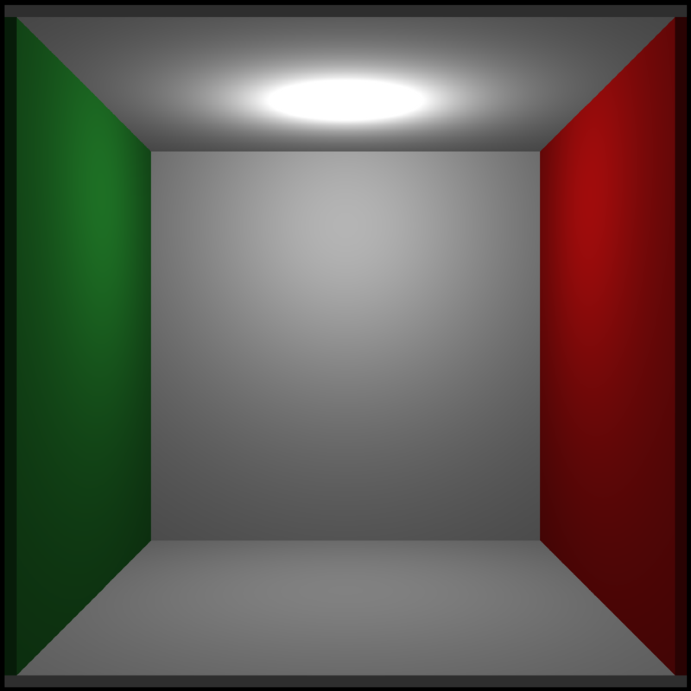
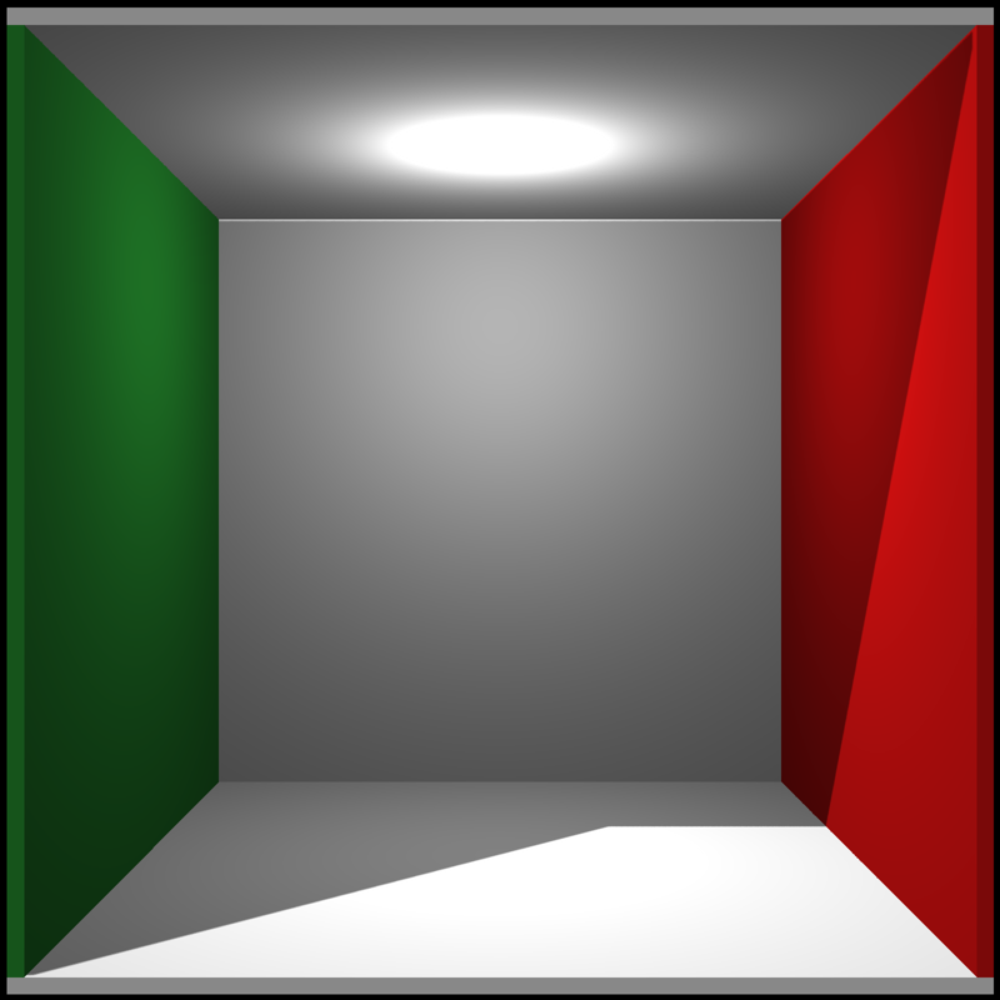
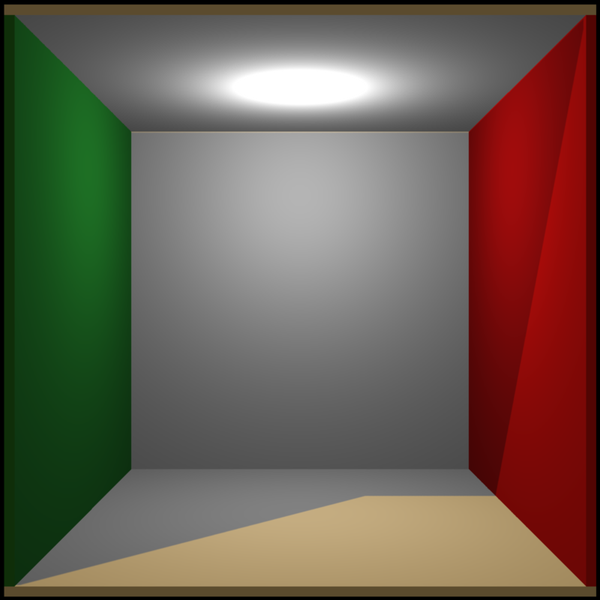

Generate Directional Lights
directional_light(direction = c(0, 1, 0), color = "white", intensity = 1)
| direction | Default `c(0,1,0)`. Direction of the light. |
|---|---|
| color | Default `white`. COlor of the light. |
| intensity | Default `1`. Intensity of the light. |
A matrix representing the light information.
# \dontshow{ options("cores"=1) # } #Add a light to scene (manually specify the light automatically added to the Cornell Box lights = point_light(position=c(555/2,450,555/2), falloff_quad = 0.0, constant = 0.0002, falloff = 0.005) # \donttest{ generate_cornell_mesh(light=FALSE) %>% rasterize_scene(light_info = lights)#># } #Add a directional light lights_d = add_light(lights, directional_light(direction=c(1,1.5,-1))) # \donttest{ generate_cornell_mesh(light=FALSE) %>% rasterize_scene(light_info = lights_d)#># } #Change the intensity and color lights_d = add_light(lights, directional_light(direction=c(1,1.5,-1),color="orange", intensity=0.5)) # \donttest{ generate_cornell_mesh(light=FALSE) %>% rasterize_scene(light_info = lights_d)#># }